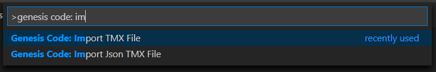

Importing TMX Files
With genesis code, you can use TMX files for generate a header C File with the information of your maps. You can use TMX file format or TMX json format for generate the header C file. For more info about the TMX file format, please see Map Editor Tiled Web page.
To generate a header C file, only you have to do is execute the Genesis Code: import TMX file for generate from TMX format file or execute the Genesis Code: Import TMX json File for generate from the Json TMX Format.

After select the TMX/ TMX json file Format, you can see in the res folder the header file with the Map information.